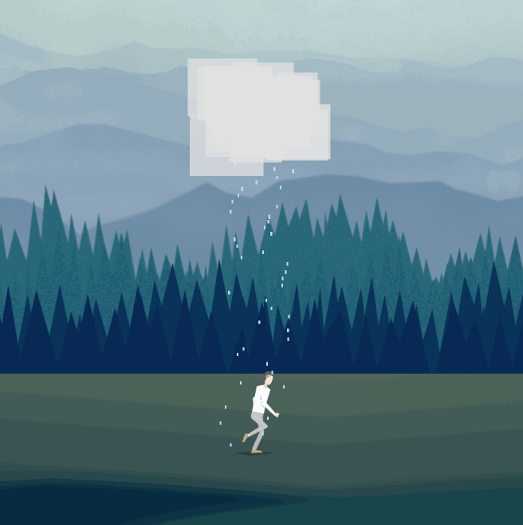
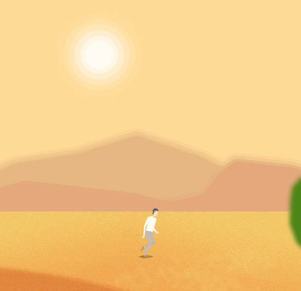
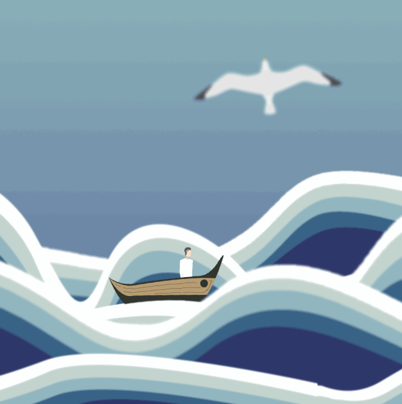
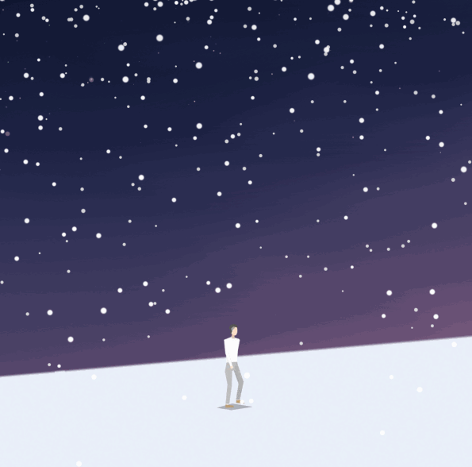

山海
Indie Game 山海
2017/1/17 by DKZ
蔻德
你说你所做的事没有意义，我不这么认为，至少对我来说意义重大。
我给你写了信，希望这个游戏能帮我送达。
严格的说这算不上一个游戏，从16年7月开始构思这个作品，一直在做减法，剥离叙事和玩家参与感，以至于这个游戏什么都没有讲，玩家甚至不用操作也可以通关。再想加一点什么却发现无处可加，因为无论加上什么都会弱化它的表达。最后，大概就是你现在看到的样子。
说这些有些突兀，难免让人感到莫名其妙。大概有太多话说不出口就变成了信，而真的起笔时又无从落笔。最后，这些话都散落山海里，变成了这个游戏。
在游戏中你只要一直按着屏幕就能前行，像是某种执念，我相信无论怎样我都能翻山过海到你身边，但所爱隔山海，山海不可平。有时候我觉得完成这个游戏便是一种救赎，它像山一样在我面前太久了。
无论怎样，我还是到这儿了。也许它并不尽如人意，世事大抵如此。我想通过做完这个游戏我可以放下一些执念，但这并不代表我会停止脚步。正如游戏中角色所做的那样，我依旧会缓缓前行。
你是我黑夜里的光，感谢你陪我翻山过海。送你这个游戏，希望它能够透过屏幕在漫漫长路中给你些许慰藉，如你一般照亮前路。我无法为你指明方向，但希望你能翻山过海一路前行，找到你所追寻的意义。
愿风雨声伴你入眠。晚安。
祝好
--布丁
   